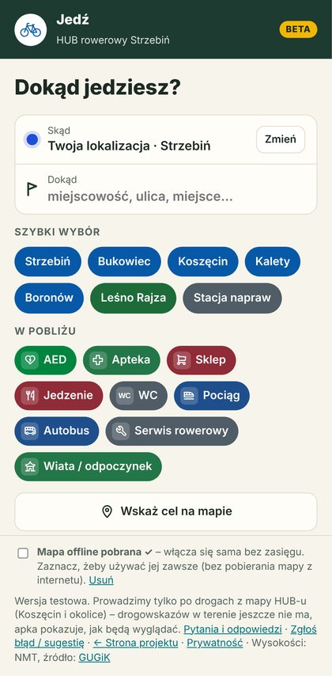
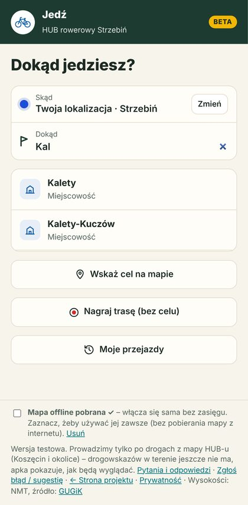
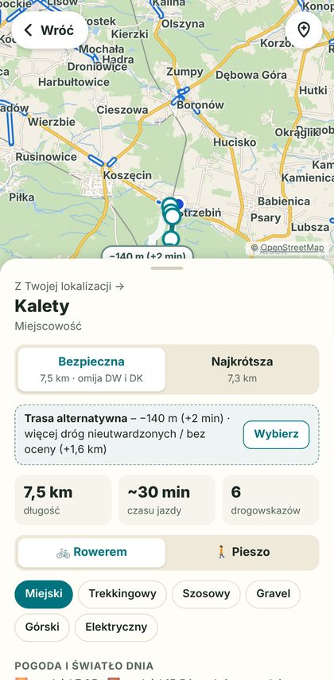
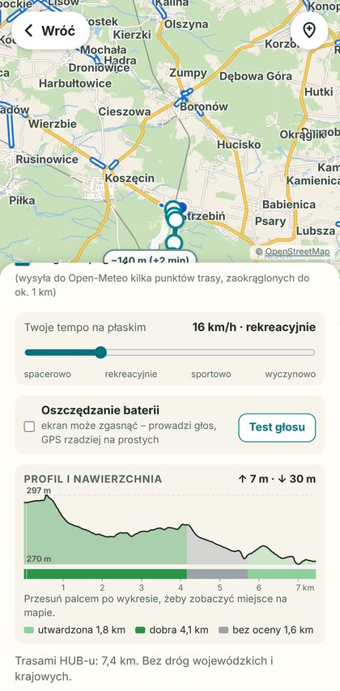
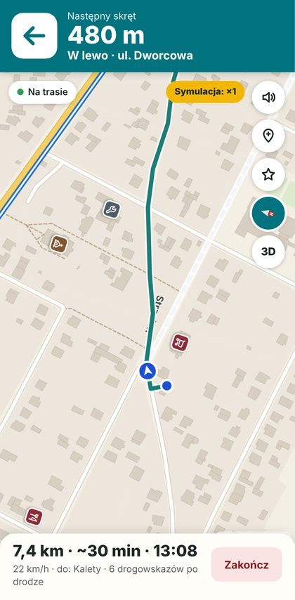
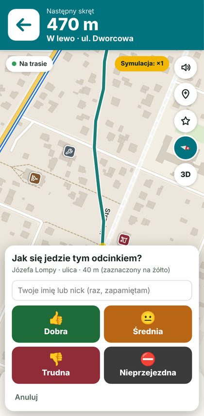

1Instalacja
- Android: pobierz „Jedź – nawigacja rowerowa” z Google Play (wczesny dostęp – instaluje się normalnie, aktualizacje przychodzą same). Telefon bez Sklepu Play? Pobierz plik APK.
- iPhone: otwórz stronę nawigacji w Safari, stuknij Udostępnij i wybierz Do ekranu początkowego. Ikona „Jedź” pojawi się jak zwykła aplikacja.
- Komputer: działa od razu w przeglądarce – przydaje się do planowania trasy w domu.
Przy pierwszym uruchomieniu zezwól na lokalizację, a w aplikacji na Androida także na powiadomienia – dzięki temu nawigacja mówi i prowadzi również przy zgaszonym ekranie. Bez zgody na lokalizację też się da: start wskażesz palcem na mapie.
2Wybierz, dokąd jedziesz
- Skąd – domyślnie Twoja lokalizacja. Chcesz zaplanować trasę z innego miejsca? Stuknij Zmień.
- Dokąd – wpisz miejscowość, ulicę albo miejsce (np. „Kalety”, „kościół”, „GOSiR”) i wybierz z listy.
- Szybki wybór – najczęstsze cele jednym stuknięciem: Strzebiń, Koszęcin, Kalety, Leśno Rajza, stacja napraw…
- W pobliżu – najbliższe AED, apteka, sklep, jedzenie, WC, pociąg – liczone po drogach, nie w linii prostej.
- Wskaż cel na mapie – gdy miejsce nie ma nazwy, np. polana w lesie.


Ekran startowy i wyszukiwanie celu3Sprawdź trasę, zanim ruszysz
- Bezpieczna (domyślnie) omija drogi wojewódzkie i krajowe, Najkrótsza – jak najkrócej. Pod spodem bywa trasa alternatywna z opisem, czym się różni.
- Rowerem / Pieszo i rodzaj roweru – szosowy unika gruntowych dróg, górski i gravel nie boją się lasu. Od tego zależy też czas jazdy.
- Twoje tempo – przesuń suwak, a czas przejazdu dopasuje się do Ciebie.
- Pogoda i światło dnia – prognoza na starcie, po drodze i na miejscu, wiatr względem kierunku jazdy, godzina zachodu słońca. Prognozę można wyłączyć przełącznikiem.
- Profil i nawierzchnia – podjazdy i zjazdy oraz pasek: zielony = droga oceniona jako dobra, szary = jeszcze bez oceny.
Strzałka Wróć w lewym górnym rogu cofa do wyboru celu. Mapa nie ucieknie za daleko – zatrzymuje się na granicy obszaru nawigacji.


Podgląd trasy – przewiń w dół po szczegóły4Jedź z prowadzeniem głosem
- Stuknij Jedź na dole podglądu. Na górze widać najbliższy skręt i odległość do niego, na dole – ile zostało i o której dojedziesz.
- Głos zapowiada skręty ok. 150 m wcześniej i na samym skręcie. Na długich prostych milczy – to normalne. Przycisk głośnika wycisza komunikaty, a Test głosu w podglądzie trasy sprawdza, czy słychać.
- Zjechałeś z trasy? Nawigacja sama wyznaczy nową.
- Oszczędzanie baterii (w podglądzie) – ekran może zgasnąć, prowadzi głos, a GPS odzywa się rzadziej na prostych.
- Na końcu stuknij Zakończ – zobaczysz podsumowanie przejazdu.
iPhone: w wersji z przeglądarki prowadzenie działa tylko przy włączonym ekranie (ograniczenie Apple). Najwygodniej z telefonem na uchwycie na kierownicy.

Ekran w trakcie jazdy5Oceń drogę – to najważniejsza pomoc
Nawigacja jest tak dobra, jak wiedza o drogach. Każda ocena sprawia, że trasy dla wszystkich omijają piach, błoto i dziury.
- W trakcie jazdy: stuknij gwiazdkę po prawej stronie mapy i wybierz, jak się jedzie odcinkiem, po którym właśnie jedziesz: Dobra, Średnia, Trudna albo Nieprzejezdna. Dwa stuknięcia – i jedziesz dalej.
- Po przejeździe: w podsumowaniu możesz ocenić drogi, którymi jechałeś.
- Nick wpisujesz raz – aplikacja go zapamięta. Pomyliłeś się? Wyślij ocenę jeszcze raz, poprawi poprzednią.
Jak oceniać: dobra – jedzie się bez kłopotu każdym rowerem; średnia – da się, ale wolniej (dziury, luźny żwir, korzenie); trudna – miejscami trzeba zwolnić mocno albo prowadzić rower (piach, błoto); nieprzejezdna – nie da się przejechać (zarośnięta, zalana, zamknięta).
Drogi poza gminą Koszęcin i okolicą można oceniać tylko po faktycznym przejechaniu nimi – aplikacja dołącza wtedy kilka punktów GPS jako dowód (nie zapisujemy ich). Oceny trafiają na mapę po sprawdzeniu.

Ocena drogi gwiazdką w trakcie jazdy6Bez zasięgu: mapa offline
- Na ekranie startowym stuknij Pobierz mapę offline (ok. 8 MB, najlepiej w domu na Wi-Fi). To mapa całego obszaru – lasy, wody, budynki i nazwy.
- Trasa liczy się w telefonie, więc w lesie bez zasięgu nawigacja dalej prowadzi. Mapa offline włącza się sama, gdy zabraknie internetu.
- Zaznacz „używaj zawsze”, jeśli chcesz oszczędzać internet.
7Moje przejazdy i nagrywanie trasy
- Moje przejazdy – historia Twoich jazd (ślad, długość, czas, prędkość). Zostaje tylko w Twoim telefonie, nigdzie jej nie wysyłamy.
- Nagraj trasę (bez celu) – gdy jedziesz przed siebie: aplikacja zapisuje ślad, dystans i czas.
- Miejsca na mapie – przyciskiem na mapie wybierzesz, które miejsca pokazywać (wiaty, serwisy, jedzenie…).
8Coś nie działa?
- Nie słychać głosu – w podglądzie trasy stuknij Test głosu. Jeśli cisza: głośność multimediów, a w ustawieniach Androida „Zamiana tekstu na mowę” – syntezator Google z językiem polskim.
- Trasa prowadzi dziwnie albo droga jest zła – oceń ją (krok 5) albo napisz.
- Na dole ekranu startowego jest Zgłoś błąd / sugestię – możesz dołączyć trasę, przy której był kłopot. Czytamy wszystko.
Więcej odpowiedzi: Pytania i odpowiedzi · Jak uzupełniać mapę na stronie: instrukcja mapy wspólnej · Polityka prywatności